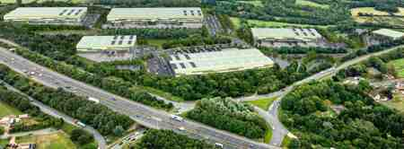

The Site
The site is located immediately adjacent to Junction 22 of the M1 and the A50 at Cliffe Hill Farm, Markfield.
The site is bound by the M1 Motorway to the west, Whitwick Road to the east and the A50 to the south. Its location provides direct access to the Strategic Road Network while remaining close to local communities and the local workforce.
Hinckley & Bosworth Borough Council's evidence identifies Junction 22 as one of the most favourable locations in the Borough to accommodate strategic employment need.
Planning policy position
The emerging Regulation 19 Local Plan now allocates the site as MARK004 under Policy PS17 for strategic employment, reflecting the identified need at Junction 22.
HBBC's Employment Land Review identifies a need for up to 65.7ha of B2/B8 space, while the Leicester & Leicestershire Strategic Distribution Study identifies Junction 22 within Area of Opportunity 4 and a residual need of 168,109 sqm at J22 on top of existing commitments.

Current planning position
The Markfield Neighbourhood Plan became out of date on 10 September 2026. The proposals continue to respond to its relevant countryside, landscape and habitat policies, while the emerging Local Plan allocation provides an up-to-date strategic employment policy basis for the site.
Read the latest position